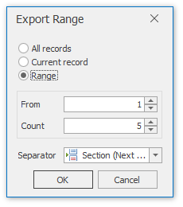

Data Tools: Mail Merge
The commands available in the Mail Merge section of the Data Tools toolbar are divided into the following categories.
Data
| Command | Large Icon | Small Icon | Description |
|---|---|---|---|
| Data Source |  |
Enables mail merge for a connected data source. After enabling this mode, the data source icon is displayed in green in the Data Explorer. There is no functionality for disabling mail merge once it has been implemented. | |
| Filter |  |
 |
Invokes the FilterString Editor to filter data in a mail merge document. |
| Sort | Invokes the Sort dialog to sort data in a mail merge document. |
Current Record
| Command | Icon | Description |
|---|---|---|
| Current Record | Allows you to navigate through records in a mail merge document. You can navigate to the Next Page, the Previous Page, the First Page or the Last Page. |
Publish
| Command | Large Icon | Small Icon | Description |
|---|---|---|---|
| Finish & Merge | Finalizes a mail merge document by supplying actual values to data elements added to a document template. This command invokes a drop-down menu to select the publishing format of a document. The following options are available:Export - exports the created document to a selected third-party format; Print - invokes the print dialog to adjust the page options of the document before sending it to a printer; Print Preview - displays the created document in a print preview window that provides options to navigate, print and/or export the document. |
After selecting the document's output format, the Export Range dialog is invoked to specify the range of data records that the document should include.

In this dialog, you can choose from the following separators to isolate different data records:
- None;
- Page Break;
- Section (Next Page);
- Section (Even Page);
- Section (Odd Page);
- Paragraph.